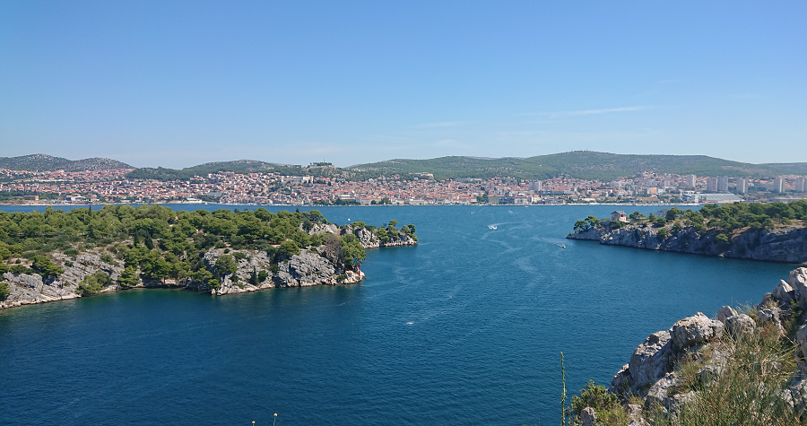
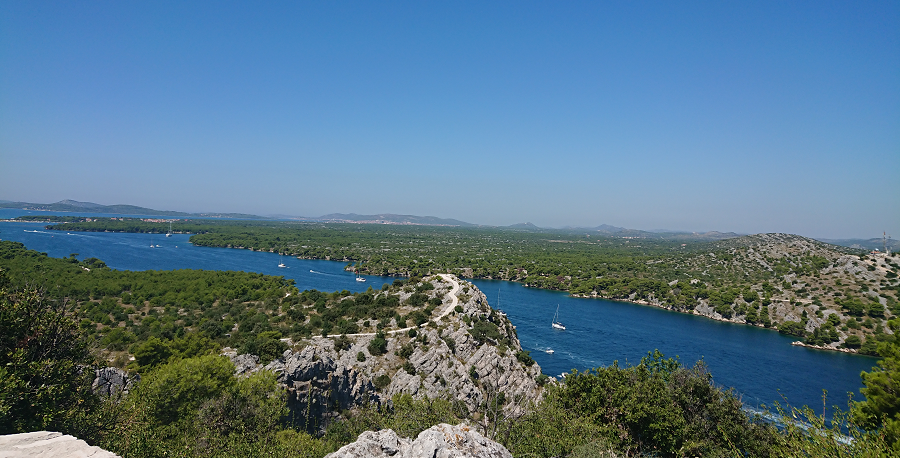
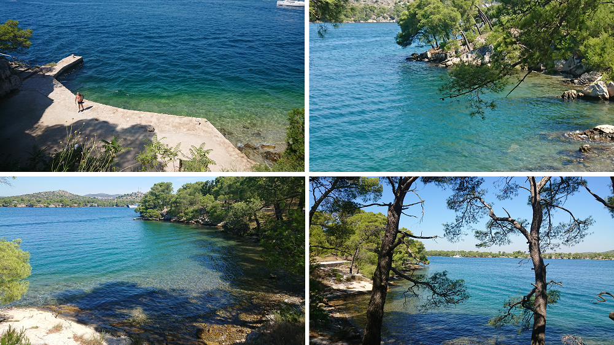
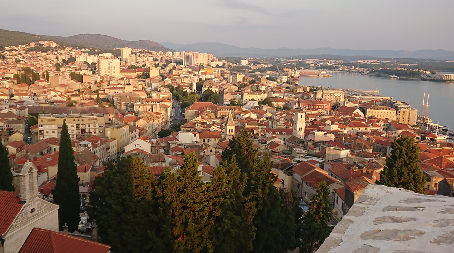

Якщо ви обрали місце для літнього відпочинку - Хорватію, і
вирішили
зупинитись на околицях, або ж в самому Шибеніку, то додатково розказувати про чудове
Адріатичне море, його клімат, безліч краєвидних островів мабуть не потрібно, оскільки більшість
туристів саме за цим і приїжджають сюди. Але для різнобарвності відпочинку, рекомендуємо
відвідати Набережну каналу святого Антонія (Šetnica Sv Ante).
Це місце, з оглядового майданчика якого відкривається чудовий вигляд, як
на
Шибенік так і на морський шлях, що веде до міського порту.

Вигляд із сторони міста. На горизонті розкинулось безліч невеличких
островів, а також видно маршрутну доріжку, що веде на черговий оглядовий майданчик.

Мабуть більше вражень ніж від самих краєвидів, залишає прогулянка по пішій
дорозі, що веде вздовж скелястої набережної. Цей маршрут довжиною до 5 км., можна подолати
також
на велосипедах - інфраструктура цьому сприяє. Найприємніше в цій подорожі є невимушені зупинки
на маленьких бухтах, де можна сміло покупатись в морі, трохи охолодитись та відпочити. Безлюдні,
маленькі
та красиві пляжі трапляються майже за кожним новим горизонтом, при чому вони доступні - є
можливість до них підійти.

Щоб добратись до цієї набережної потрібно проїхати до фортеці св. Миколая,
яку також варто відвідати відпочиваючи в Шибеніку. Біля цієї фортеці є невеликий міський пляж,
до речі також малолюдний, від цього пляжу потрібно рухатись вправо - ви легко зорієнтуєтесь за
численними вказівниками. Щодо фортеці святого Миколая, то вона практично є на всіх путівниках,
та брошурках про Шибенік, ну і звісно можете знайти за картами в інтернеті. Враховуючи, що ці
місця не є надто популярні, серед туристів, то поруч з пляжем біля
фотреці проблем з паркуванням авто нема.
Ось як виглядає фортеця св. Миколая (Tvrđavi sv. Nikole).
Сподіваємось, що вам сподобається в такий спосіб урізноманітнити ваш відпочинок.

Опубліковано 4-09-2021